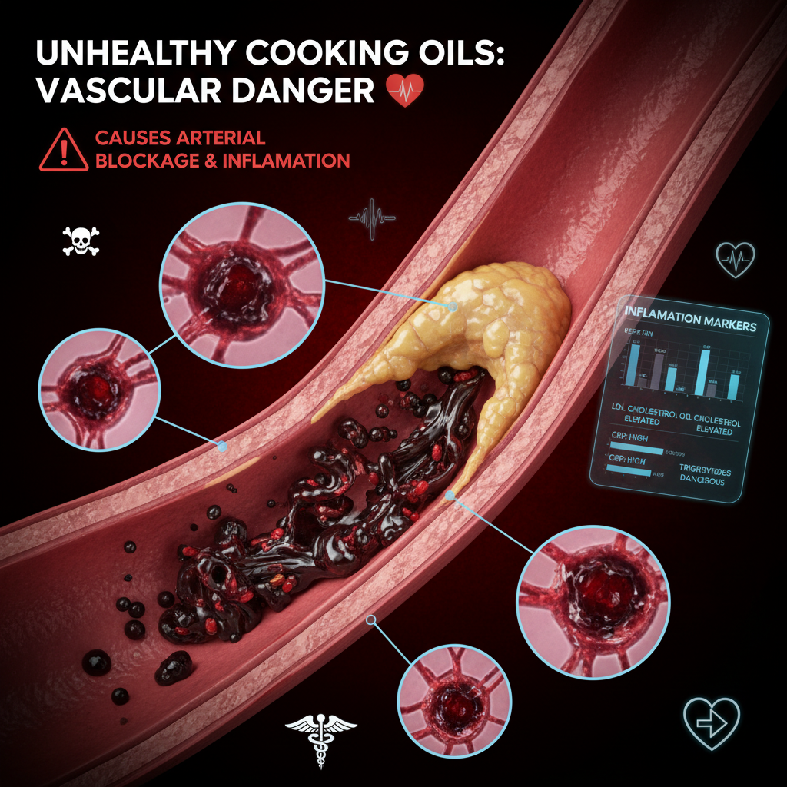
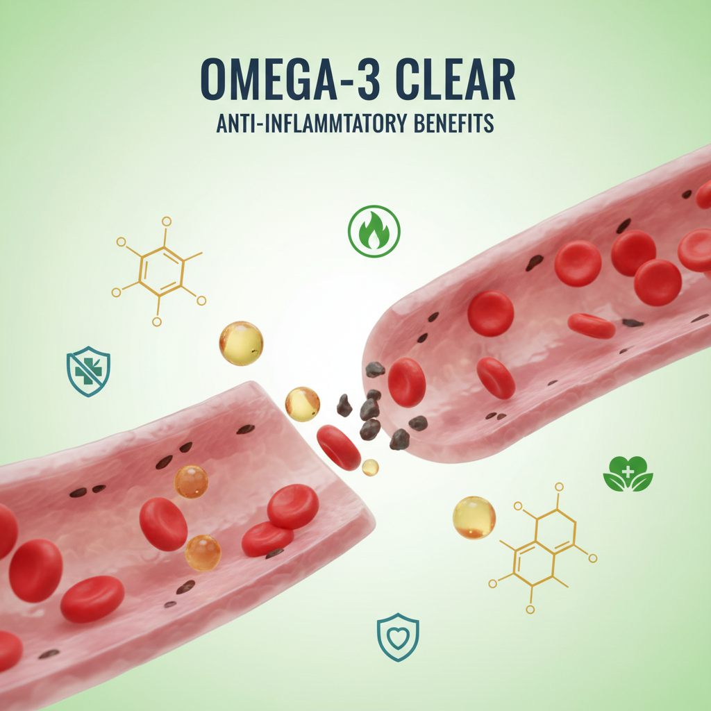

我们要承认一个残酷的事实：大多数家庭的餐桌，正在慢慢摧毁家人的身体。
如果你真的爱你的家人，就请停止用"垃圾"填满他们的胃。
菜单：白粥 + 咸菜 + 馒头/油条
本质：一碗纯糖水 + 钠超标的致癌物 + 劣质油脂
身体反应：
血糖像过山车一样飙升，胰腺被迫疯狂工作
后果：上午10点就犯困、脑雾、注意力涣散。长期这样吃，直接预定糖尿病床位。
菜单：纯燕麦/杂粮 + 水煮蛋 + 纯牛奶/豆浆
本质：慢速释放的燃料 + 细胞修复的材料
身体反应：
血糖是平滑直线，大脑持续获得稳定葡萄糖供应
后果：大脑像被点亮，专注、清醒、情绪稳定。这才是人类该有的状态。
习惯：大量廉价大豆油/菜籽油，高温爆炒，回锅油炸
体内画面：
富含Omega-6的劣质油 + 高温氧化 = 促炎因子

残酷结局：你以为省了油钱，其实是在为心脏支架和脑梗塞攒首付。
习惯：橄榄油、亚麻籽油，补充深海鱼油，多凉拌蒸煮
体内画面：
Omega-3脂肪酸是血管的"清道夫"和大脑的"润滑油"

残酷结局：皮肤透亮，关节不痛，大脑反应敏捷。这种健康感，花多少钱都买不到。
状态：追求"饭气攻心"的快感，必须吃到肚子发胀
生理代价：
大量血液涌向胃部，大脑缺氧。饭后瘫在沙发上，身体正在费力处理毒素。
长期影响：内脏脂肪堆积，脂肪肝，呼吸暂停综合征。你正在亲手把自己变成油腻的中年人。
状态：追求"七分饱"的轻盈，吃是为了给大脑和肌肉供能
生理代价：
吃完饭后，身体立刻就能进入工作或运动状态。没有负担，只有能量。
长期影响：保持敏锐，保持精悍。你在同龄人开始发福油腻的时候，依然像个战士。
每天多花 20 元
一个月多花 600 元
一年多花 7,200 元
ICU一天费用：8,000 元
进口靶向药：数万至数十万
护工费：300/天
结论：现在的每一口健康食物，都是你投给未来的"尊严保险"。
现在的每一顿垃圾暴食，都是你在透支生命的"高利贷"。
不要再说"老一辈吃了一辈子咸菜也没事"。
时代的生存环境变了，我们的压力变了，食品工业也变了。
在这个充满了糖分陷阱和劣质添加剂的世界里，保持清醒的饮食，是一种极高的自律，更是一种生存智慧。
作为家里的顶梁柱/未来的顶梁柱，请把垃圾食品扔进垃圾桶。
哪怕父母骂你浪费，也好过以后你在医院的走廊里痛哭。